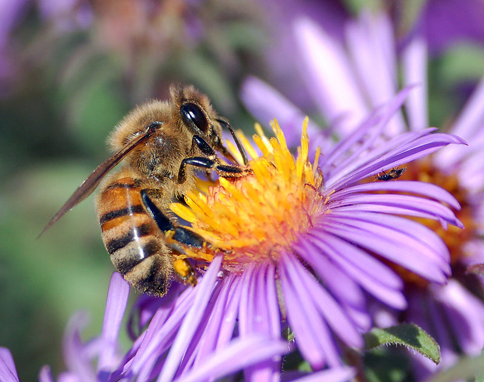
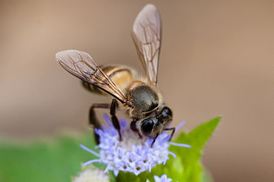
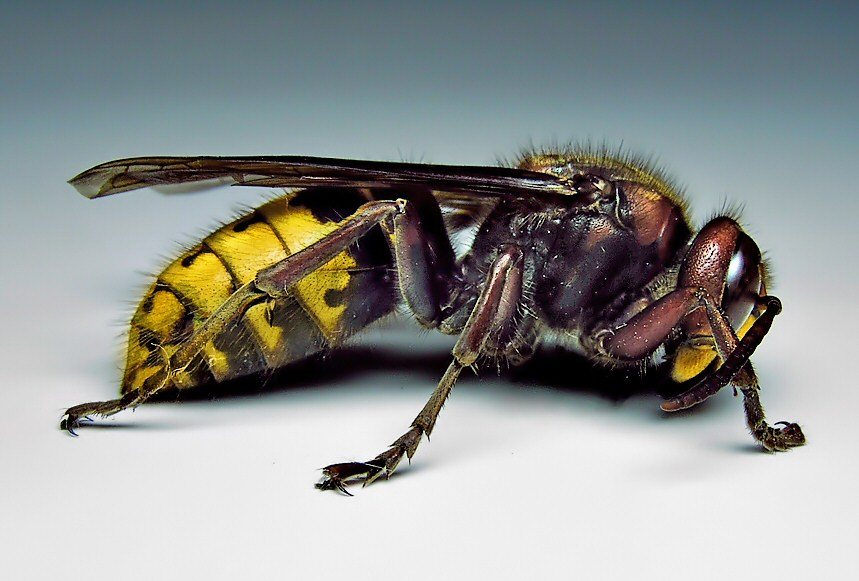
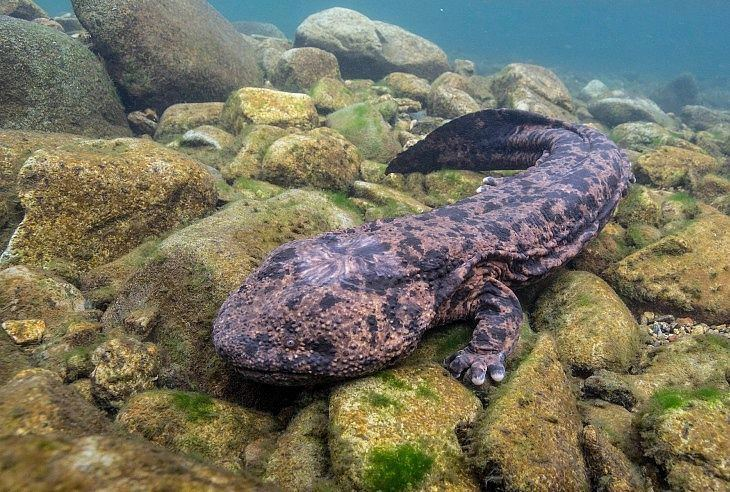
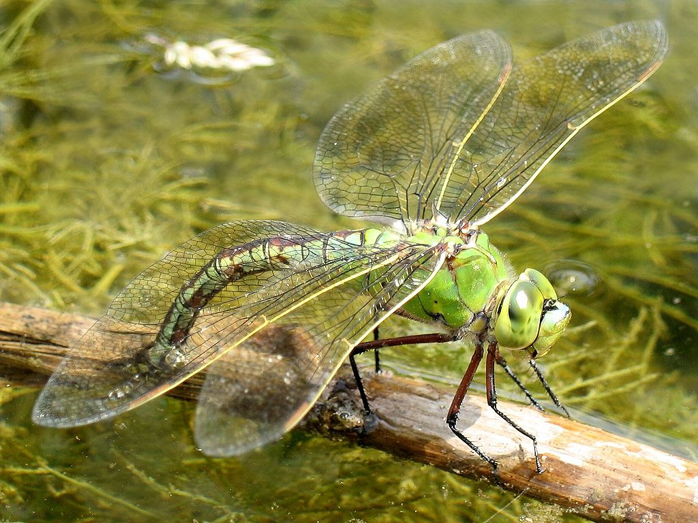

З давніх-давен і до сьогодні люди, в більшості своїй, звикли поділяти хижаків на "правильних" і "неправильних". Правильні - це істоти, до яких ми відчуваємо свого роду повагу і симпатію, - це орли й соколи, леви і тигри, ведмеді та видри. Відповідно, "неправильні" - це абсолютно не симпатичні істоти, які взагалі невідомо для чого мешкають на нашиій планеті, - гієни й грифи, змії та крокодили, павуки і скорпіони. І якщо перші мають право полювати апріорі, то другі - підлі вбивці, що вершать свої чорні справи нишком, - просто не мають права на існування.
Цей типово європейський підхід до поняття справедливості в природі позбавлений будь-якого біологічного сенсу в грунтується виключно на нашому ставленні до тої чи іншої живой істоти. У тваринному світі поняття "хижак" і "вбивця" не тотожні. В результаті боротьби за існування між хижаками та їхніми жертвами виникає деякий паритет, заснований на безперервній "гонці озброєнь", ескалації первної рівноваги, коли обидві сторони конкурують на все більш складних рівнях. І чим більш винахідливим є хижак, тим більш досконалими й невразливими стають його жертви.
У тваринному світі трапляються і справжнісінькі війни. Мабуть, найвідоміша з них - війна бджіл і шершнів. Сталося це, коли в Японії бджолярі привезли європейські підвиди медоносних бджіл (Apis mellifera) з метою поліпшення економічного ефекту від пасік ендемічного виду - японської бджоли (Apis cerana). Для вирощування вічно голодних личинок гігантським шершням (Vesra mandarina japonica) потрібно багато їжі. Бджоли, будучи відносно постійним джерелом живого білка, підходять якнайкраще. Свою здобич гігантські шершні вбивають жалом або просто розгризають шелепами, потім ретельно пережовують і цією кашкою годують личинок (дорослі шершні харчуються їжею рослинного походження). Варто шершню-розвіднику знайти вулик, як він залишає на ньому мітки, скликаючи своїх побратимів на бенкет. Тільки уявіть, за одну хвилину японський жовтий шершень здатен знищити сорок бджіл-захисників, а банда з 30-40 загарбників може погубити протягом трьох годин усіх мешканців вулика. Марно маленькі відважні захисники намагаються зупинити чужинців, їхні жала не в змозі пробити оболонку шершнів. Але японська медоносна бджола, яка виросла у світі, де життя постійно межує зі смертю, навчилася протистояти агресору. Проти гігантських шершнів бджоли використовують свою тактику. Головне вчасно помітити противника! Навколо шершня-розвідника миттєво утворюється клубок з кількох сотень бджіл. Якщо навколишня температура підвищується до 47℃, гігантська оса гине. На відміну від шершня, японські бджоли витримують температуру до 50℃. Тому весь рій медоносів щільно огортає ворога і доводить температуру до критичної точки. У загарбника спочатку трапляється тепловий удар, потім він немов зварюється живцем. Щоправда, останні дослідження показують, що загибель гігантської оси пов'язана не тільки з підвіщенням температури - значну роль відіграє також двоокис вуглецю, що виділяється японськими бджолами, але це не надто важливо. У цьому побоїщі гине, звичайно, і багато бджіл, але це єдиний спосіб зберегти вулик.
Медоносна бджола
Японська бджола
Шершень
Запеклі бої відбуваються й у менш грізних істот - у риб. Самці півників (Betta splendens) мають дуже буйну вдачу. Як досвідчені забіяки, півники не лізуть у бійку стрімголов, вони спочатку оцінюють ворога. Але через пару хвилин приходять до одного і того самого висновку: їхній суперник - тюхтій і слабак, і впоратися з ним буде не дуже важко. Починаються бої без правил - самці сходяться, щипають і кусають один одного. Стандартний поєдинок бійцівських рибок триває три години.
Тварини-одноосібники також захищають свої земельні володіння. Японська велетенська саламандра (Andrias japonicus) за вдачею відлюдниця, вона не потребує суспільства одноплемінників і вважає за краще жити на самоті. Зрідка трапляється так, що двоє або троє представників цього виду можуть оселитися поблизу, проте в таких випадках між сусідами постійно відбуваються сутички. Дві рівні за силою саламандри часто обмінюються при зустрічі "люб'язностями" у вигляді жорстоких укусів.
В однієї з найбільших європейських ящірок - прикрашеної ящірки (Lacerta lepida) - спостерігається подібна поведінка. Господар люто захищає кордони своїх володінь - найчастіше справа доходить до кривавих бійок. Розлючені противники пускають у хід гострі зуби, завдаючи один одному серйозні каліцтва, і часом поєдинок закінчується загибеллю одного з учасників.
Навіть бабки, такі як дозорець-імператор (Anax imperator), в період розмноження оберігають територію - вони здійснюють польоти, контролюючи свою ділянку, і, побачивши порушника йдуть на таран.
 Півник
ПівникЯпонська саламандра
 Прикрашена ящірка
Прикрашена ящіркаБабка дозорець-імператор
Для більшості тварин війна полягає в нападі на здобич або в обороні від ворога. І треба зауважити, що такі чарівні створіння природи, як дельфіни і морські котики, черепахи та їжачки, не кажучи вже про дятла, синичку та інших птахів, є найсправжнісінькими хижаками. А кумедні зайці й незграбні на перший погляд бегемоти вирішують територіальні конфлікти значно жорстокіше, ніж неприємні нам гієни. І нарешті, наші найближчі родичі примати, включаючи шимпанзе, часом витворяють таке, що на їхньому тлі кривавий Джек Різник здався б безневинним жартівником. Іншими словами, як писав Гете: "Тварина робить те, що їй визначила природа."